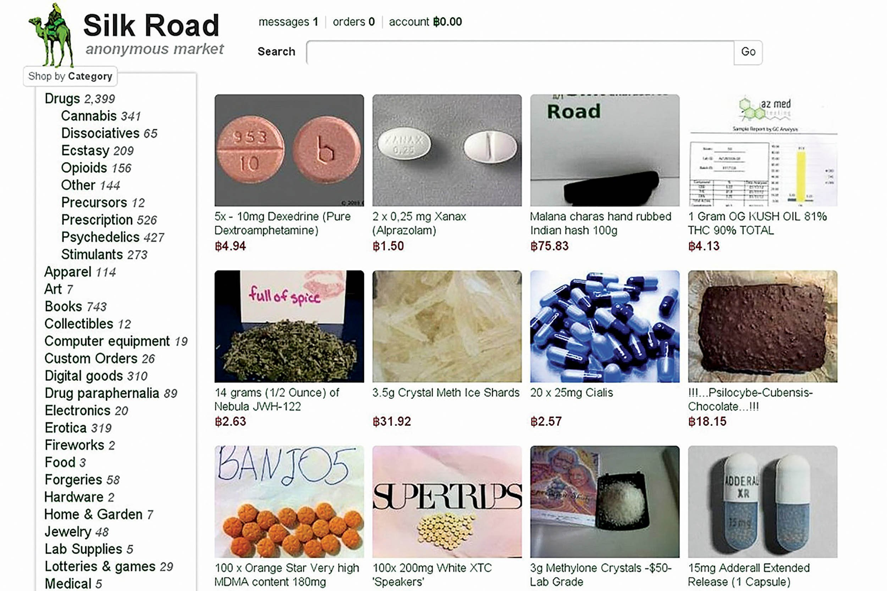

(18+) 浮出水面的 4 個知名暗網
在許多暗網中，有那麼幾個特別有名，以至於表網也能看到許多相關的介紹，以下就介紹幾個知名的暗網網站的故事跟內容，連結就不公開貼出來了，網址其實不難找，真的有興趣的自己稍微 Google 下。
# 前言
如果你不清楚什麼是 Dark Web (暗網)，歡迎先觀看我的上一篇文章「(18+) Dark Web 暗網｜人口販賣、兒童色情、殺人直播？電影情節真實上演！」！
注意，以下所介紹的資訊有影響心理狀況的可能，請在觀看前衡量自己身心狀況後斟酌觀看。
# Red Room (紅房)
-
介紹
暗網中最知名的「 殺人直播 」網站，與一般的直播網站一樣，有個螢幕及聊天室供觀眾聊天互動，開播後，主持人會依照觀眾所發出的命令直接在螢幕上對受害者實施，並且全程為直播，例如觀眾可以在支付比特幣後，於聊天室要求主持人將受害者的手指砍下之類的，至於金額，只要主持人覺得可行就會照做，主要就是提供給那些有錢又變態的人娛樂人命的服務。 -
規則
為了防止只是來湊熱鬧的群眾，紅房有個「 敲門費 」，進直播間之前，你就必須先支付 0.1 BTC，這可以用來確認觀眾是真的有一定程度的消費能力，但這只是初級的身份，該身份僅能觀看，並不能在聊天室打字互動，更不能對主持人下命令，你可以選擇花費 1 BTC 來升級身份為「 Master 」，該身份即可於聊天室打字互動，但依舊沒有對主持人下命令的權限，若是要得到該權限，必須花費 10 BTC 來升級身份為「 Grand Master 」，接著就可以開始享受如何將畫面上的人慢慢折磨致死。 -
不過正因為紅房的知名度太大，目前網上已經出現許多假冒的紅房出現，錢過去什麼也看不到，就我自己所知的紅房連結就有三個，而真的紅房說不定早就消失在暗網之中了。


# Silk Road (絲綢之路)
-
介紹
是暗網上最知名的交易平台，大家說的「 暗網黑市 」通常就是指這裡，使用者可以免費註冊帳戶後在上方購買東西，但若是賣家想刊登商品，則必須購買賣家帳戶，通常以販賣毒品為主。 -
起源
-
1984 年 3 月 27 日，第一代絲綢之路由 Ross Ulbricht 創建，他的絲路帳戶為「 Dread Pirate Roberts 」。
-
2010 年之前，Ulbricht 曾經親自種植致幻蘑菇，網站上線後自己也在網站上賣過致幻藥品，後來主要負責網站管理。
-
2011 年 6 月，芝加哥國土安全調查局 (HSI) 特工 Jared Der-Yeghiayan 開始調查絲綢之路。
-
截至 2012 年止，絲路之路的月銷售額估計略超過 120 萬美元！
-
截止 2013 年 3 月 3 日，該網站用戶已達 100 萬人。
-
2013 年 10 月 1 日，Ross Ulbricht 在舊金山的一家公共圖書館被捕，5 月份因參與 毒品交易、蓄謀違反毒品法、蓄謀非法入侵計算機、設立非法毒品交易市場、通過網絡參與毒品交易、散播虛假身份、洗錢 七項指控被判處終身監禁。
-
2013 年 10 月，絲綢之路 1.0 被 FBI 封停
Ulbricht 被判刑後，比特幣匯率迅速下降，2013 年 10 月 2 日，比特幣匯率由 140 美元 降至 129 美元，10 月 3 日，該貨幣低至 110 美元。
根據 FBI 的指控，Ulbricht 至少獲得了 70 萬比特幣 約 8000 萬美元 的利潤，而絲路總交易額為 950 萬比特幣，總計約 12 億美元。
至今絲綢之路共經歷過 4 個版本，分別是 絲綢之路 1.0、2.0、3.0 及目前還在運作的 3.1。
有興趣知道更多的 點我 前往 Wiki 維基百科 觀看。 -
-
我「夢到的」
夢裡，經我個人實測，網站頁面非常乾淨容易操作，註冊帳戶比你註冊 Facebook 還簡單，不同的點是，密碼是系統幫你設置的，通常是一段亂碼，你需要保管好此密碼，以便用於下一次的登入。
至於內容的確就是… 大量的藥物跟槍支，當我好奇搜尋「 Taiwan 」時，頁面上居然真的有一家店舖表示有提供台灣地區的服務，仔細一看不是毒品，似乎是某種強姦藥水之類的迷幻藥。


# Besa Mafia (榮耀黑手黨)｜該服務證實是假的，不過事件太有名了還是分享下

- 故事 (取自網路 並 縮減內容)
倫敦的業餘黑客 Monteiro 在暗網上調查了一年多，得出了一個結論，暗網的確有許多所謂的「 殺手組織 」，但大多數都只是騙子。
2016 年 2 月 20 日開始，Monteiro 調查起了一個名為「 Besa Mafia 」的僱用殺手服務，該網站自稱是阿爾巴尼亞黑幫所架設的，而「 Besa 」是阿爾巴尼亞語「 榮耀 」的意思。

Monteiro 登入 Besa Mafia 的網站，創建一個帳戶後下了訂單，並在訂單的目標攔未上填寫一個名稱「 Bob the Builder 」，這是一個虛構的人名，Monteiro 也按照要求支付了比特幣。
不久之後，Monteiro 發現殺手網站的管理員 Yura 開始拖延找藉口，說是殺手遇到交通意外，或是行動被警方發現 等，Monteiro 也開始逐漸認為該網站就是詐騙。
之後 Monteiro 進一步的調查 Besa Mafia 後發現，該組織在網絡上僱用許多寫手寫假文章吸引顧客，並且向疑似擁有殺人需求的人投放廣告。
Monteiro 找了一個黑客朋友，發起一個代號為「 蔬菜行動 」的黑客攻擊行動，打算毀掉 Besa Mafia，Monteiro 與朋友前後對 Besa Mafia 的伺服器發動了 3 次大規模的黑客攻擊，終於，Besa Mafia 的網站被癱換了，大量的用戶帳號、密碼及電子郵件都被洩漏。

然而在 Besa Mafia 的網站癱瘓後 7 個月，該網站上的暗殺名單中，一個目標真的死掉了！
經警方調查後發現，該事件是一位叫做 Stephen Allwine 的 IT 工程師，因為婚內出軌，而想雇殺手謀殺妻子 Amy Louise Allwine，後來 Stephen 發現 Besa Mafia 網站被黑掉，並且有 FBI 來家中警告他的妻子，讓他近期注意自己的安全。
這時候 Stephen 才知道 FBI 已經知道了 Besa Mafia 的網站，並且知道他的妻子是其中一個暗殺目標，於是心想著不如將計就計，親手殺死妻子，警察也只會懷疑是 Besa Mafia 行動，而不會懷疑到自己身上。
Stephen 用 9 毫米口徑的手槍射擊妻子，並將屍體拖至臥室偽裝成是壓力太大自殺身亡，Amy Louise Allwine 於 2016 年 11 月 死在家中的臥室，然而犯罪現場遺留了許多破綻，並且 FBI 也在 Stephen 的電腦硬碟上，找到使用該網站下訂單的證據。
Stephen 被指控犯有二級謀殺罪，然後在 2017 年 3 月大陪審團起訴他犯有一級謀殺罪。

# Lolita City (蘿莉塔之城)

暗網討論度最高的，除了毒品、槍枝、虐殺外，就是「 Child Porn (兒童色情) 」，圈內人簡稱為「 CP 」，對於常逛暗網的人來說這個詞絕對不陌生，而「 Lolita City (蘿莉塔之城) 」就是一個知名的 CP 論壇，每天都有著許多戀童癖會員前來光顧，與一般的色情網站一樣，有著各式各樣腥羶色的照片、影片，差別在於影片中的主角都是未成年！這些未成年年紀最小近新生兒。
- 自 2012 年 11 月以來，該網站提供了兒童色情視頻。
- 截至 2013 年 6 月，該網站託管了約 140 萬 張兒童色情圖片
還記得上次介紹的「 Anonymous (匿名者) 」嗎？
如果還不知道什麼是「 Anonymous 」，趕快 點這裡 去看我的文章。
那篇介紹匿名者的文章中，有提到他們於 2011 年 10 月宣佈展開名為「 Operation Darknet 」的行動，旨在打擊暗網中的兒童色情網站，所謂的兒童色情網站，主要就是指「 Lolita City 」啦，所幸 Anonymous 成功攻下伺服器，取得了 1589 名 使用者的資料，並公之於眾。
匿名者發表聲明稱該網站讓戀童癖的問題惡化，甚至會誘使他們進行誘拐、猥褻、強姦兒童。

 BTC
BTC PayPal
PayPal